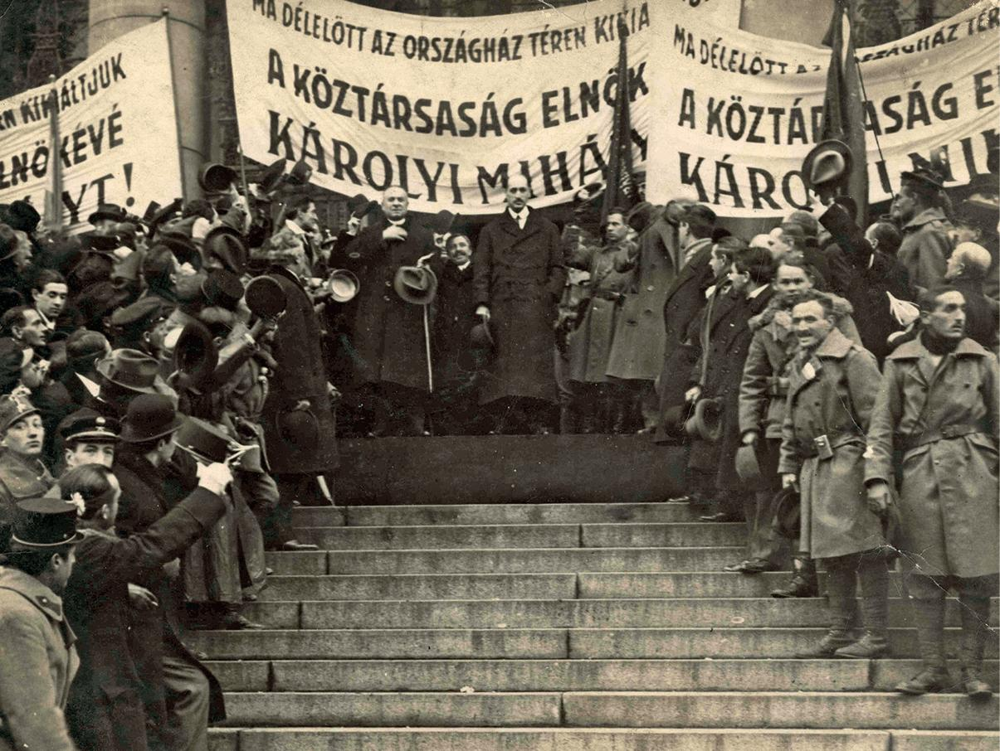

A Magyar Királyság az első világháborúban a központi hatalmak oldalán vett részt az Osztrák–Magyar Monarchia részeként, nem pedig külügyeiben
független hatalomként. Fő célja a területi integritás megőrzése volt, amelyet az Orosz Birodalom terjeszkedő politikája,
valamint a Szerb Királyságot is bevonó pánszláv törekvések fenyegettek.
A háború 1914-től 1918-ig tartó hadműveletei során a harcok néhány alkalommal elérték a történelmi Magyarország területét is.
Az első jelentős események az 1914–1915-ös orosz betörések voltak, melyeket a Monarchia erői végül visszavertek.
Emellett 1914 őszén rövid ideig tartó szerb támadás érte a Szerémség területét, míg 1916-ban a román hadsereg indított támadást Erdély irányába.
Ezeket a behatolásokat a magyar haderő szövetségesei támogatásával sikeresen elhárította, így az ország területi egysége a háború végéig fennmaradt.
Ennek ellenére a kettős monarchia egyre nehezebb helyzetbe került. Gazdasági potenciálja jelentősen elmaradt az antant országaihoz képest,
miközben egyszerre több fronton kellett helytállnia. Tovább nehezítette a helyzetet a belső nemzetiségi problémák súlyosbodása, valamint az,
hogy a háború előrehaladtával az Osztrák–Magyar Monarchia egyre inkább a Német Birodalom alárendeltségébe került.
Az első világháború végére a Monarchia teljesen összeomlott, és helyét több új állam vette át, amelyek önmagukat nemzetállamként határozták meg,
bár valójában gyakran heterogén etnikai összetétellel rendelkeztek.
1918 őszére egyértelművé vált az Osztrák–Magyar Monarchia háborús veresége és egyben a felbomlása is. Az 1918 októberének végén kirobbanó őszirózsás forradalom Budapesten az általános elégedetlenség közvetlen következménye volt. A felkelők a demokratikus reformokat hirdető Károlyi Mihály miniszterelnöki kinevezését követelték, amelyet október 31-ére sikerült is elérniük. Az új kormány a háború befejezését, független Magyarországot, demokratikus szabadságjogokat és földosztást ígért. Bár az általános választójogot és a politikai szabadságjogokat törvénybe iktatták, a gazdasági reformok azonban késlekedtek, miközben az antantcsapatok benyomultak az ország területére. 
A kormány népszerűsége gyorsan csökkent, miközben a Kun Béla által megalapított Kommunisták Magyarországi Pártja (KMP) egyre nagyobb támogatottságot szerzett, mivel a munkásság hatalomátvételét és a gazdasági problémák gyors megoldását ígérte. Az ország helyzetét tovább súlyosbította az 1919. március 20-án kézhez kapott Vix-jegyzék, amely újabb magyarlakta területek kiürítését követelte. A jegyzék elfogadhatatlansága miatt a kormány lemondott. Károlyi Mihály köztársasági elnökként a Szociáldemokrata Pártnak adott lehetőséget a kormányzásra, ám azok Károlyi tudta nélkül egyesítették pártjukat a KMP-vel, és március 21-én kikiáltották a Tanácsköztársaságot.
A Tanácsköztársaság alatt a Forradalmi Kormányzótanács minden kérdésben teljhatalmat gyakorolt. A kormányzás szovjet mintára szerveződött, az üzemeket, bankokat és
földeket államosították, és megindult a szövetkezetesítés. Kun Béla, aki a Forradalmi Kormányzótanács egyik legbefolyásosabb tagja volt,
meghatározó szerepet játszott a rendszer irányításában. Bár néhány szociális intézkedést sikerült bevezetni, a gazdasági problémák megoldása elmaradt,
ami sokak elégedetlenségét váltotta ki. A lázadókkal szemben a Vörös Őrség keményen fellépett, és a társadalmat folyamatos megfélemlítéssel tartották sakkban a
„vörösterror” félkatonai egységei.
A párizsi békekonferenciára 1920 januárjában érkezett meg a magyar küldöttség gróf Apponyi Albert vezetésével. Bár a politikus próbálta megvédeni legalább a többségében magyarok lakta területeket, népszavazást kérve a hovatartozásról, a nagyhatalmak minden felvetését elutasították. A valóságban a végső döntés már 1919 nyarán megszületett.
A békeszerződés aláírására 1920. június 4-én a Trianon-palotában került sor, amely során az ország területe 283 ezer km²-ről 93 ezer km²-re csökkent, így Magyarország elveszítette területének kétharmadát. A Felvidék és Kárpátalja Csehszlovákiához, Erdély, Partium és a Bánság keleti része Romániához, a Szerémség, Bácska, Bánság nyugati része és Muraköz pedig a Szerb–Horvát–Szlovén Királysághoz került. Nyugaton egy keskeny sávot, a későbbi Burgenlandot Ausztriához csatolták. Az egyetlen népszavazás Sopron és környékének Magyarországhoz tartozását erősítette meg, ezért Sopront „a leghűségesebb városként” emlegették. A területi veszteségek mellett a népesség is drasztikusan csökkent, 18,2 millió főről 7,6 millióra. Az elcsatolt területeken 3,3 millió magyar került kisebbségi helyzetbe, és közel 400 ezer magyar menekült az anyaországba, ami családok ezreit sodorta nyomorúságos körülmények közé.
A gazdasági következmények legalább annyira súlyosak voltak, mint a területi veszteségek. Az ország elvesztette nyersanyagforrásai túlnyomó részét, beleértve a kősó-, kőszén- és érckészleteket, valamint a faállomány nagy részét. A feldolgozóipar azonban nagyrészt Magyarországon maradt, kihasználatlanul. A közlekedésben is súlyos problémák jelentkeztek. A vasúthálózat nagy része az utódállamokhoz került, megszakítva az országrészek közötti kapcsolatot. Ezt tovább súlyosbította, hogy a román megszálló erők a mozdonyok és vagonok jelentős részét elvitték.
A gazdasági élet legnagyobb problémáját a Monarchia idején kialakult munkamegosztás felbomlása jelentette. A tőke és a munkaerő szabad áramlása megszűnt, az utódállamok között pedig ellenséges viszony alakult ki, amely gátolta a gazdasági együttműködést és fejlődést. A magyar társadalom egésze számára a trianoni béke elfogadhatatlannak bizonyult, a revízió gondolata szinte minden politikai erő céljai között megjelent. A különbséget csupán az jelentette, hogy egyesek részleges revíziót szerettek volna, amely csak a magyarlakta területek visszacsatolását célozta, míg mások a történelmi Magyarország teljes helyreállítására törekedtek.